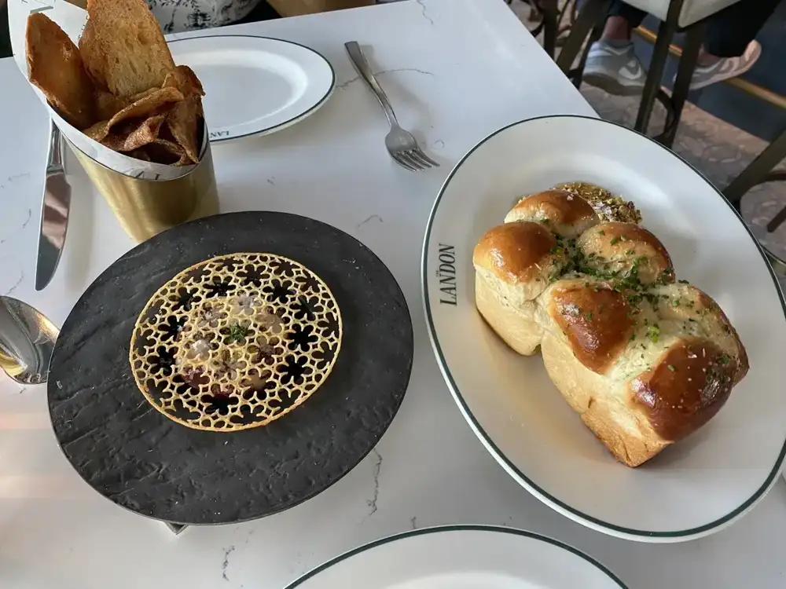
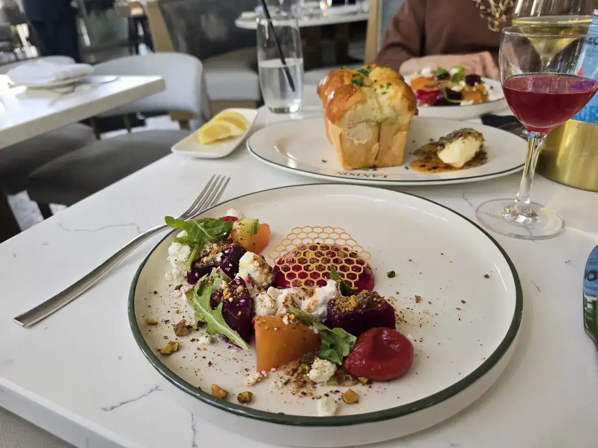
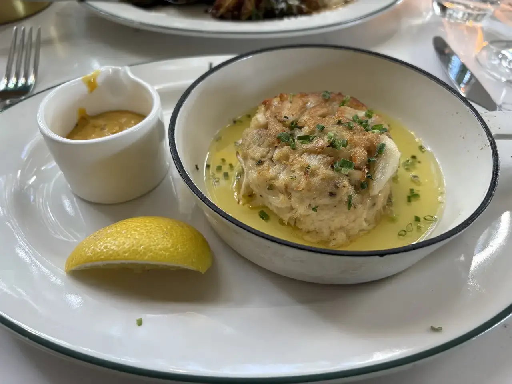

Milk bread
Pull-apart milk bread with sea salt butter, hot honey, lavender and pistachio brittle.
The Landon · Town 'n' Country
The Landon Restaurant serves Town 'n' Country from Tampa.
The Landon Restaurant is based in Tampa and works with customers from Town 'n' Country. Call (813) 981-0068 to ask about timing and directions.
Dinner on South Howard
Start with the bread, then the caviar, then something green.

Pull-apart milk bread with sea salt butter, hot honey, lavender and pistachio brittle.

Beet and goat cheese with beet foam and truffle honey, plus Landon's chop and a Calabria Caesar.

10k scallops, hamachi crudo and grouper with a corn cake and shrimp.
4.7 ★ · 202 Google reviews
If you’re looking for a truly exceptional dining experience in Tampa, The Landon is the establishment you seek. From the moment you walk in, you’re greeted by the most friendly hosts, who make you feel like you’re an old friend they haven’t seen in a while and so happy you dropped by. The service was impeccable. I don’t think our water glasses were ever less than half full the entire meal.
One of the best dining experiences we've had! The hospitality is outstanding! We drove from Jupiter, FL just to try this place and couldn't be happier we did. From the moment we arrived, everyone was welcoming, warm, and kind. There was even a handwritten note waiting at our table thanking us for dining with them.
Went for a special birthday dinner, lovely restaurant! Amazing service, everything was cooked to perfection and beautifully plated. I see why folks recommend the 10k scallops, they were so yummy! The hamachi crudo is also a must. The little purple things are fried rice paper, such a cute touch. Milk bread at Mai's was better, but this is alao delicious in a different way.
Katie absolutely made our experience unforgettable! The food was amazing, the atmosphere was great, and the restaurant itself was wonderful, but Katie truly knocked it out of the park! I have dined at plenty of restaurants, but I can honestly say I have never had a server deliver an experience quite like hers. What really stood out was how well she knew the menu.
Excellent! We went in for an early dinner and grabbed a drink at the bar before we went to our table. They offer a nice selection of craft cocktails and wine. The restaurant is beautiful, very light, clean, crisp and inviting. Service was good amd food was excellent. We tried the deviled eggs and milk bread, both we fantastic. We shared the London chop salad which was great.